If tortoises did not have this shield…! You think this helmet is worthless for me?
$ $
Why can’t the fox eat the tortoise?
$
How do hard shells help animals?
Are there other organisms that possess outer shells like that of the tortoise?

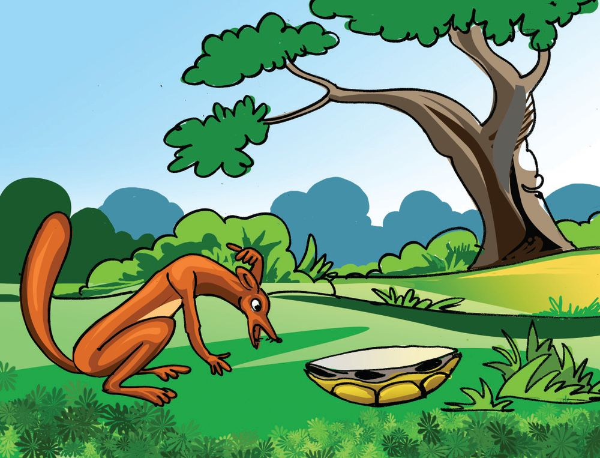
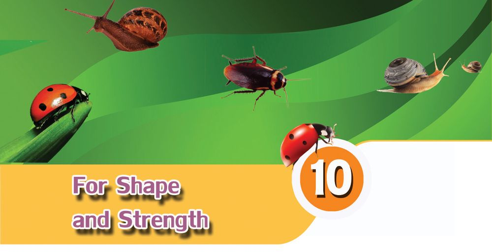
If tortoises did not have this shield…! You think this helmet is worthless for me?
$ $
Why can’t the fox eat the tortoise?
$
How do hard shells help animals?
Are there other organisms that possess outer shells like that of the tortoise?
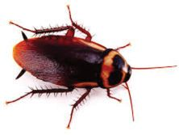
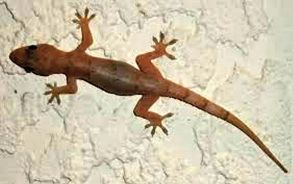
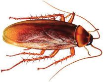
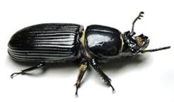
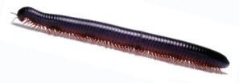
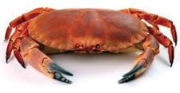
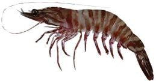
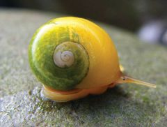
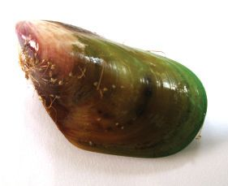


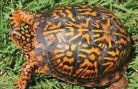
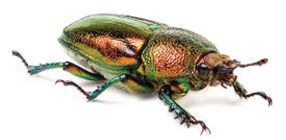
Basic Science - VI Observe the pictures and find out the characteristics of the shells of these organisms.
For shape and protection Snail, beetle, crab, oysters etc., have hard shells. The shells of centipede, millipede etc., are comparatively less hard. Shells help to protect the body parts, provide shape and help to escape from enemies. These coverings in the outer surface of the body are called exoskeleton. Scales of fishes and reptiles, feathers of birds, hairs, horns, hooves and nails of animals are all remnants of the exoskeleton.
$ $ $
Are the outer shells of all organisms the same? How do the exoskeleton of centipede and millipede differ from others? What is the relation between Colour diversity in exoskeleton the exoskeletons of animals and their shapes?
$
How do these exoskeletons help animals?
Examine the reading material and write down your findings in the science diary.
The beautiful patterns and colours in the exoskeletons make many organisms very attractive. This attractiveness becomes a threat to their existence too. Man captures these organisms without any concern for them. Many of such organisms are facing the threat of extinction.
To give shape
Star Tortoise
Golden Beetle
Cockroach and lizard are two small creatures always found in our houses, aren’t they? Are their skeletons alike?
125


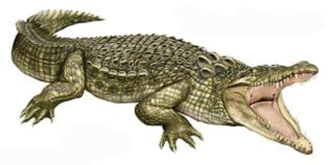
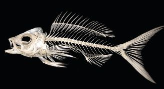
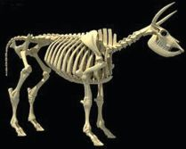
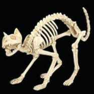
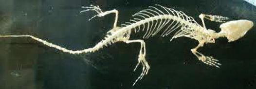
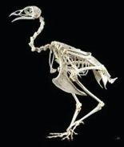
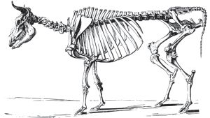
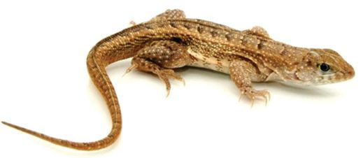
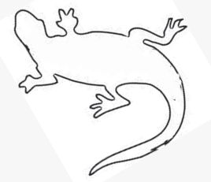

Basic Science - VI Draw the skeleton of a lizard in the following picture.
Let us familiarise ourselves with skeletons The figures of skeletons of different organisms are given below. Observe the figures and identify the organisms to which they belong.
Assess yourself whether the diagram of the lizard's skeleton you have drawn is correct or not. We have learnt that outer shells are the exoskeletons. If so, what do we call the skeleton seen inside the body?
In cow, goat etc., the skeleton is seen inside the body. This is called endoskeleton. Organisms like tortoise, crocodile etc., possess both endoskeleton and exoskeleton.
126

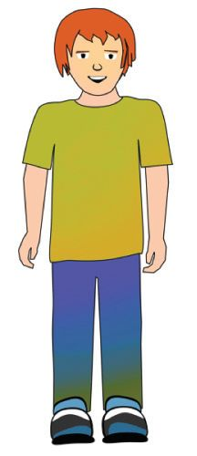

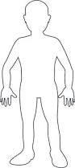
Basic Science - VI A cow has an endoskeleton. What would have been the shape of the cow if it had no skeleton?
$
In which ways do skeletons help animals?
Write down the findings in your science diary.
Bones provide shape and strength to the body. They also help in movement.
Human skeleton We have familiarised ourselves with the skeletons of various animals. We also have a skeleton. Learn the position and shape of different bones in our body by touching. Now, try to draw the structure of your skeleton in the following sketch.
Assess the diagram you have drawn on the basis of the given indicators.
$ $ $
Are bones of various parts of the body included in the diagram? Have you drawn the size and shape of the bones correctly? Are the protective measures of the heart, brain and lungs properly included in the diagram you have drawn?
127


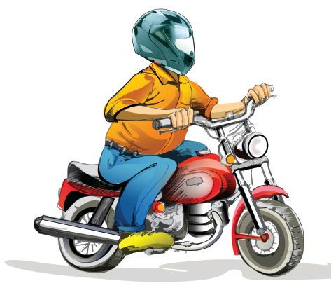
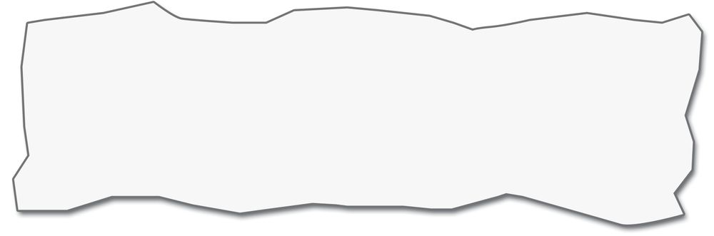
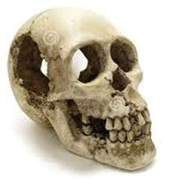
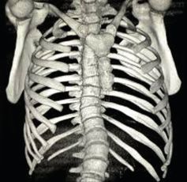
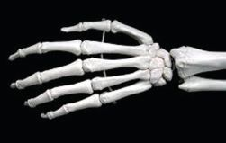
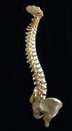
Basic Science - VI Examine the pictures of bones of various parts of the human body.
Bones of the hand Skull Ribs Observe the model of the skeleton in the Science Lab.
Vertebral column
List the characteristics and functions of the bones you have observed.
Bone
Characteristics
Use
$ Skull $ Ribs $ Vertebral column $ Bones in the hand $ Bones in the leg Analyse the table. What are your findings from the table?
$ $
How do the bones of the human body differ in their size and shape? What is the significance of the skull?
Youth Escaped Kochi: A lorry hit on a twowheeler. The passenger fell on the road. But his head was not injured as he was wearing a helmet. His hands and legs were severely injured.
$ 128
Why do two-wheeler riders have to wear helmets?


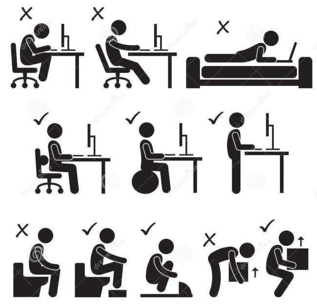
Basic Science - VI
Bones of many kinds Skull, ribs, vertebral column and other bones differ in their size and shape. The skull protects the brain. In the skull, the lower jawbone alone is movable. The jawbone is the strongest bone in the body. The vertebral column keeps the body erect. Certain injuries in the vertebral column cause lifelong paralysis. Ribs cover and protect the lungs and the heart. The thigh bone is the largest bone in the human body. Stapes in the ear is the smallest bone in the human body.
Proper postures of the body Proper postures are to be maintained for the health and longevity of the vertebral column. Look at the right postures to be followed while sitting, standing and lying.
$
Which posture has to be maintained while lifting a weight?
$
How do you sit in the classroom?
It is necessary to keep the vertebral column straight in every instance. Bending of the vertebral column will adversely affect its health. This may also bring about backpain.
129


Basic Science - VI
How many bones? Around 300 bones are there in the body at the time of birth. By adulthood, certain bones fuse together and the number reduces to 206. The number of bones in human body is as follows: Skull Ribs In each leg Waist (hip)
: : : :
22 24 30 2
Vertebral column In each hand Chest bone
: 33 : 32 : 1
Did you see any bones in the pinna and nose in the human skeleton you have observed? Soft bones are seen in nose and ear. These are called cartilage. Cartilages are more in number in children.
For movement and locomotion Try to do the following activities by tying a long stick behind your elbow. Act as if you are eating food by lifting the hand tied with the stick.
$ $
Show with the same hand how you brush your teeth.
Why can’t you do these activities? What is the arrangement in your hand to help you perform these actions easily? Move your palms and elbows. Can you move both in the same way? Examine the ways in which different parts of the body like neck, knee and fingers can be moved.
Body part
130
Movement/Characteristics
$
palm
$ Can move up and down
$
elbow
$
$
knee
$
$
neck
$
$
wrist
$


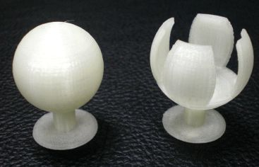
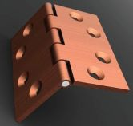
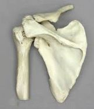
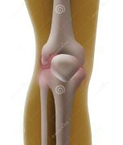
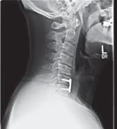
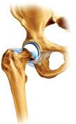
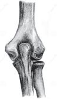
Basic Science - VI
$ Which of these can be moved only in one direction? $ Which can be moved in both directions? $ Which parts can be moved in many directions? Analyse the table and record your findings.
Joints connect bones together and help us in various movements and actions. Name of joint Body parts Ball and socket Shoulder joint joint Hip joint
Hinge joint
Pivot joint
Elbow
Characteristics Freely movable. The ball of one bone rotates in the socket of the other bone.
Knee
Like a hinge, can be moved only in one direction.
Neck (Part where the skull and the anterior part of the vertebral column joins).
A bone turns in opposite directions at an axis in the same plane.
Let us construct models 1.
Hinge joint: Construct a model showing the movement of the knee joint with two flat wooden pieces and a hinge.
2.
Ball and socket joint: Construct a model of the shoulder joint using one ice cream ball, a small ball and a stick.
3.
Pivot joint: Observe the movement of lids of certain powder tins, lotions etc., and construct a model of the pivot joint by using these lids.
131


Basic Science - VI
$
What would have been our difficulties if there were no joints in the human body?
.................................................................................................................................. ..................................................................................................................................
$
How can we perform the following actions if the neck bones are immovable? Try. a. Walking b. Reading c. Looking at the person sitting behind you. You have learnt about the bones and their functions in the human skeleton. What changes should be made in the diagram you first drew? Modify the diagram and include it in the science diary.
Let’s protect the bones
$ $ $
Have you ever had a bone fracture? When do the bones get fractured? How do you know that your bone is fractured?
Bone fracture Strong impact can cause the breaking of bones or appearance of fissures in the bones. Breaking of bones is called fracture. Sometimes the position of the bones is changed. This is called dislocation. Bone fractures can be identified by examining the following symptoms.
$ $ $ $ $ 132
Pain in the injured part. Difficulty in moving the injured part. Swelling of the affected part. A slight bending at the site of injury. Structural change with respect to a similar bone.


Basic Science - VI
When a bone is fractured A person whose bone is fractured should be taken immediately to a hospital. What all things are to be taken care of before taking the person to a hospital? The broken parts should not be moved. Tying splints will be helpful.
Splint Splint is a strong support made of wood, plastic or metal. Tying the broken part using a splint helps to block its movement. Try to practice tying splint, using a wooden scale.
Hardness of bones Hardness of bones is due to the presence of calcium phosphate. So calcium and phosphorus are essential for the growth of bones. During the course of growth, minerals like calcium and phosphorus harden bone. In infants, the bones are not very hard because the deposition of calcium phosphate is less. In adults calcium required by the body is absorbed from the bones. This causes weakening of bones. Vegetables like ash gourd, snake gourd etc., fruits like guava, jambu etc., egg, milk and small fishes are rich in calcium.
You have familiarised yourselves with different types of skeletons and joints. What care should be taken for the health of bones? What precautions should be taken to prevent fracture of bones? Conduct a discussion. Exhibit the main suggestions in the classroom. Collect the pictures of skeletons of different animals and prepare an album.
The learner can
$
recognise the importance of exoskeleton and endoskeleton and explain their functions.
$
give examples for organisms with endoskeleton and those with exoskeleton.
133

Basic Science - VI
$ $ $
identify joints and explain their movements.
1.
List out the characteristics of exoskeleton and endoskeleton.
2.
construct models of joints. identify and practice the first aid to be administered when bone fracture occurs.
Exoskeleton
Endoskeleton
$ $ $
$ $ $
Complete the concept map.
Human skeleton Joints Hinge joint
$ Knee $
1.
134
The pictures show the skeletons of a bird and an animal. What are the resemblances between their skeletons and human skeleton? Find out


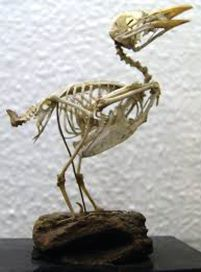
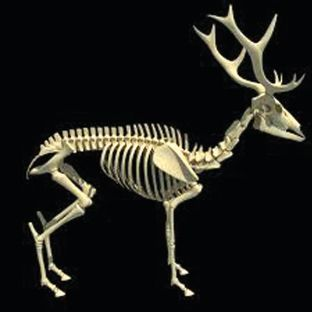
Basic Science - VI using the hints.
$ skull $ ribs $ bones in the legs and hands $ vertebral column
2.
Observe the movements of the limbs of cow, dog and cat. Compare it with the movement of our hands and legs.
135